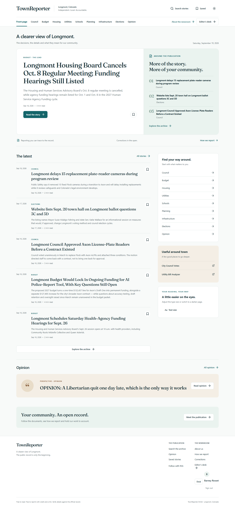
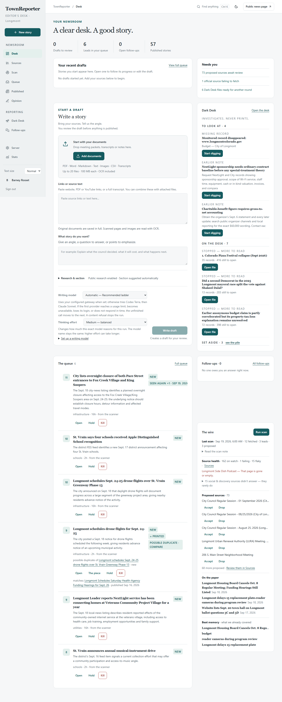
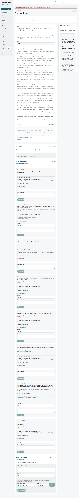
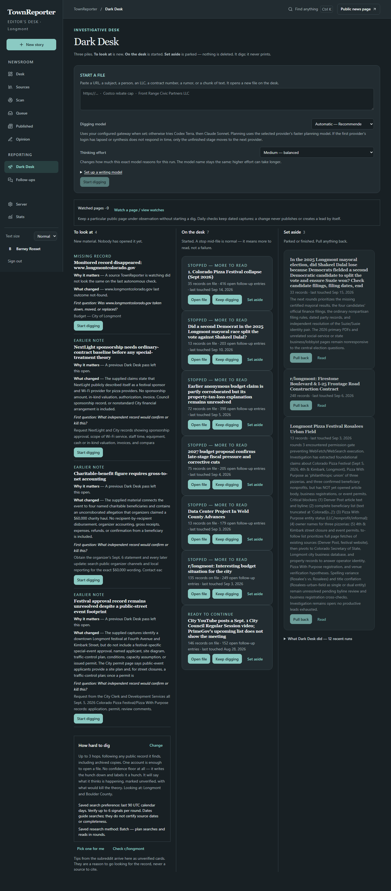
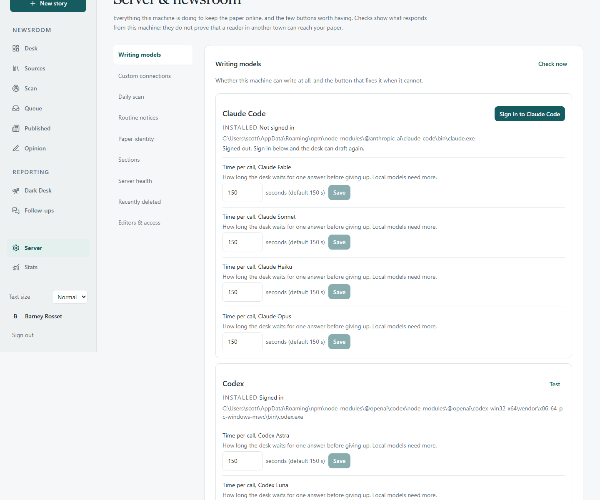
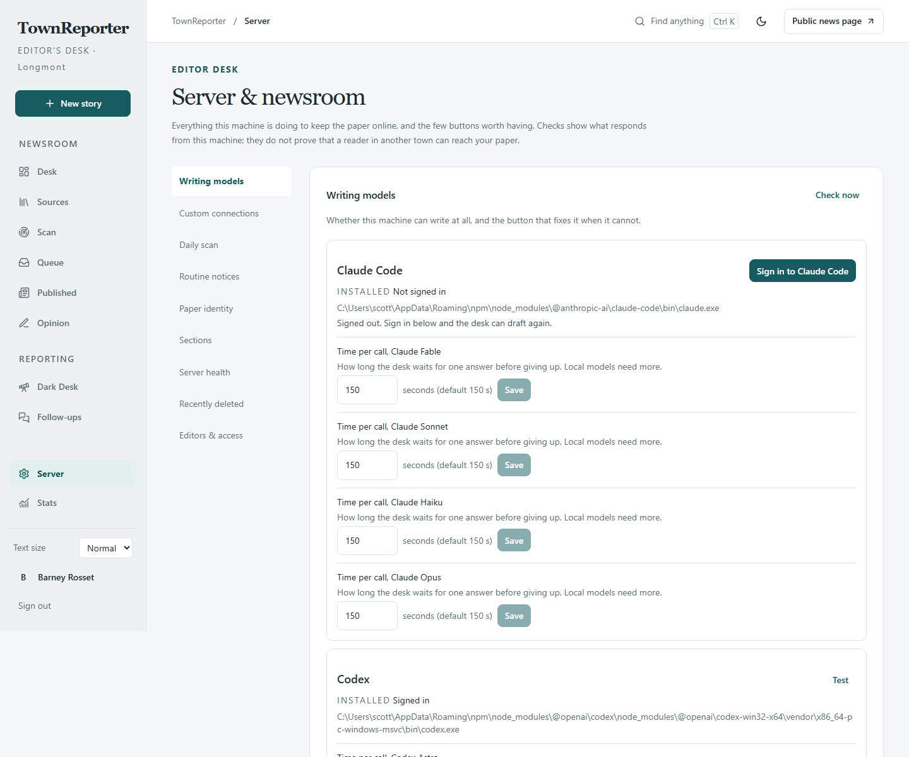

Independent civic reporting
The public record is only the beginning.
TownReporter is a civic newsroom you run yourself. It watches meetings, money, contracts and public records — then keeps digging when something changes, disappears or doesn’t add up. A human still decides what prints.
Current release: 0.6.12, the build the live paper runs. Everything described here is on it.
Same three jobs on every story. The model does not get a masthead.
What you actually get
A paper on the front, a working desk behind it
These are real product screenshots, not mockups. The workbench and Paper setup show development examples; the other images are historical Longmont screens from 29 August. Their old Leave as editor header link now lives as Give up the desk on the Server page.






New in 0.6.8
Pick the model everywhere, and the desk stays readable
Pick the model everywhere
One registry
Story, Scan and Dark Desk now all show the same Writing model picker — Automatic, Codex Terra, Codex Sol, Claude Opus or Local model — each one reading from a single provider registry instead of four files that had to agree by hand.
Readable for real eyes
Dark mode, fixed
Every informational text token in both themes now meets WCAG AA contrast, and nothing on the desk renders below a 14px floor. A new Text: Normal / Large toggle sits next to Light/Dark in the header for anyone who wants it bigger still.
Set how long a model may take
Server page
Each writing model on the Server page now has its own Time per call, editable between 10 seconds and 60 minutes with the shipped default shown beside it and a Reset — so a slow local model finally gets the room it needs.
The idea
Most local coverage dies in the packet
The agenda is public. The five-hour tape is public. The staff report is public. Almost nobody reads them, and the one story that does get written is often a rewrite of the announcing source.
TownReporter is built for the other job: watch the civic record, follow what it doesn’t say, keep a copy when it vanishes, and put a reported story in front of an editor. The Longmont edition is the working proof — city council, planning, NextLight, St. Vrain Valley Schools, Boulder County, PrimeGov, the city channel, Longmont Public Media.
It is not the Times-Call, not the city, and not a replacement for either. It is a newsroom you can clone.
- The rewriteA press release, restated. TownReporter’s draft pass is supposed to follow the attachment, the prior meeting, the missing minutes — then a person still has to report it.
- The 12k sliceA five-hour hearing is not its first 1,800 characters of hold music. Transcripts are stored whole. Retrieval is supposed to find the vote, not the pre-session.
- Captions as minutesAuto-captions invent names. Packets and minutes are the official record. The tape is a map. The editor is told this; the software will not save you.
- Uncertainty as a stopDark Desk does not gate on “we’re not sure.” Unknown, weak, and previously-dead trails stay investigable. Publication is a different button, on a different page.
- The intern with a mastheadScan files leads. Draft fills a workbench. Dark Desk fills a file. None of those print. Publish is a person.
Two rooms
The paper is public. The desk is not.
The paper
Anyone
Stories a human published. Sources shown. Compare versions when a cited record moved. Corrections in the open. RSS. About and How we report say the same thing this page says, on the masthead.
The desk
Signed-in editors
Watch list, scan, queue, workbench, reporting notes, research memo, Dark Desk. First account is owner. A second identity is not auto-granted editor. Notes never print.
How it works
Watch, then follow, then a human gate
-
Watch
A list of civic sources — city, council, PrimeGov, planning, utilities, schools, county, the YouTube tapes. Starting point, not a fence.
-
Detect
A scan fetches those pages, hashes them against the last snapshot, and flags what changed, what disappeared, and what failed to appear when it usually does.
-
Follow
Before a story is drafted, the desk asks what the announcing source leaves unexplained, then follows attachments, names, contracts, parcels, prior meetings.
-
Preserve
Significant captures are stored. If a record later vanishes, the captured version remains, and the article says so.
-
Investigate
Dark Desk is the recursive lane. Competing hypotheses. The whole tape. Trails exhausted until new evidence reopened them. It does not print.
-
Write, then gate
Drafts are reported stories, not recaps. Hold, kill, or publish is a person. Every material claim should be checkable against a document you show.
-
Credit
When a story hangs on another newsroom’s reporting, name them and link the exact story, not a homepage. Stay on the workbench while Draft with AI runs — the form fills when the pass lands.
Meetings
Three records of the same night
Packet
PrimeGov JSON + PDFs
The catalog is an API, not a crawl of a login wall. Agenda, packet, and minutes are separate documents. YouTube titles join the matching meeting.
Tape
City channel + Public Media
Full timestamped transcript, not a slice. Upcoming livestreams stay listed with no fake captions and are rechecked. Sister channel fills a gap. Month must match.
Minutes
The official action
Captions are a map. Names may be wrong. Quotes need a check. Minutes not posted after 36 hours is a catalog note — a reason to look, not a story by itself.
Install
Clone it. Create an editor. Pick the writing model at the desk.
# Node 22+, then: git clone https://github.com/scottconverse/TownReporter.git cd TownReporter npm install npx playwright install chromium cp .env.example .env # API keys optional — local and signed-in CLI paths supported npm run dev # http://localhost:8080/login — create the owner account
Playwright Chromium is for Show transcript and JS civic sites (Municode). PrimeGov packets still work without it — they are a JSON API.
Pick per story. Every Queue row and the story workbench put a model picker beside Draft with AI. Automatic uses your configured gateway when set; otherwise it tries Claude Opus, then Codex Terra, before the job starts, then keeps that provider for every pass. Named choices never fall back.
Set up a writing model opens help under every Queue, workbench and Opinion picker: installation links, sign-in on the server's account, and reload/retry steps. Opinion also explains its required voice file. Nothing installs or signs you in automatically.
Claude Code strips its coding settings for news calls. Codex deliberately keeps the signed-in Windows user’s native configuration and full available access: search, shell and files, browser/computer tools, apps, plugins, hooks, skills, rules and multi-agent capabilities. TownReporter does not replace them with a read-only sandbox.
Zen MiMo and Local Qwen were removed from the picker (2026-09-02). 0.6.10
brought a local model back as a named pick, “Local model”: whatever
LLM_BASE_URL already points at, on every picker once that variable
is set. Codex and Claude reuse their signed-in CLI sessions and check readiness
before enqueue.
Prefer a gateway? Any OpenAI-compatible /v1/chat/completions endpoint
works with three LLM_* vars — LiteLLM, Bifrost, Helicone, MLflow, Kong,
Ollama, OpenAI or OpenRouter. It becomes the forced Story Automatic provider and the
configured provider for Scan and Dark Desk.
Opinion offers Claude and the local model. Automatic and Claude Opus both mean
Claude Opus through your signed-in Claude Code session, which reads the editorial
voice by file path and keeps its tool-free writing boundary; Local model is
offered too, once LLM_BASE_URL is set. Codex is not offered for editorials:
its model declines to write a piece that takes a position on a local policy
question, so it stays on the Story picker. A refusal, assistant note, implausible
headline or incomplete body is marked failed and never becomes a draft.
Unset DATABASE_URL and you get embedded PGLite. Fine for a look.
Data dies when the process stops. A newsroom wants Postgres.
Your city
The Longmont edition is the example, not a fence
Create the owner account and TownReporter opens Set up the paper. Enter the masthead, city, timezone, contact links and starting sources. Add the city’s meeting-video channels and the title phrases its clerks use. Save, and the public paper and newsroom follow those database settings immediately.
No file edit or rebuild. The same form stays under Server → Paper setup. If the city uses PrimeGov, add its exact public portal to the watch list. Full notes are in the operator setup.
Status and limits
What this is not
- Not a newspaper of record. It is a newsroom you run. Treat every draft as a first draft you still have to report.
- GitHub Pages is this landing page, not the app. The newsroom is Node. Clone it, or deploy to a host that can run Node 22, Playwright Chromium, and Postgres.
- Playwright on serverless is a maybe. Meeting transcripts need a real Chromium. A Vercel function usually cannot open one. Packets still ingest.
- First user is owner. A second person needs the one-time, email-bound link created under Server → Invite an editor.
- PGLite is a demo database. Use Postgres if you care about the archive.
- Setup needs real sources. TownReporter cannot infer the right agenda portal, meeting channels or local title vocabulary from a city name. The owner supplies them.
- Dark Desk has no publish button. That is not a missing feature.
Start a paper for your city
Clone it, create the owner, and fill in one screen. The Longmont edition is the working example; your database holds your paper’s identity and sources.